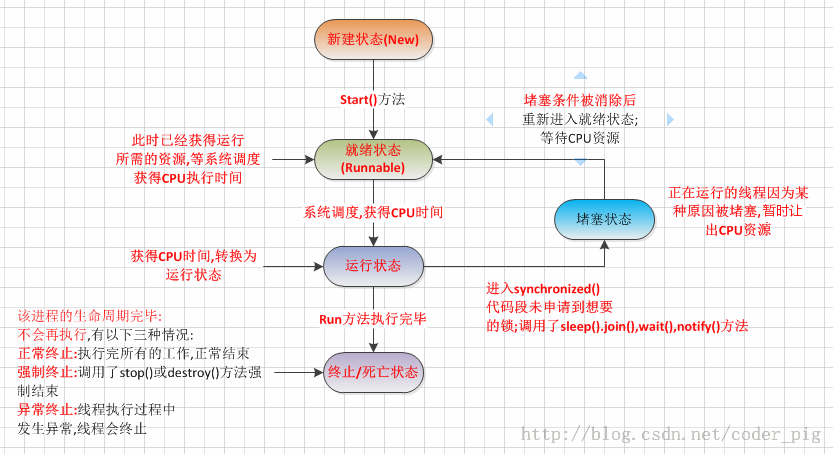
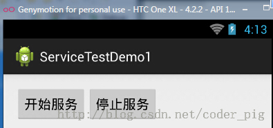
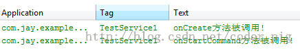
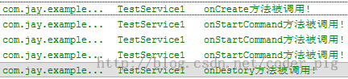
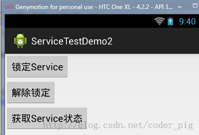
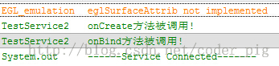
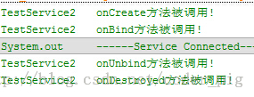
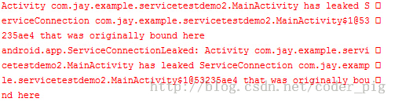
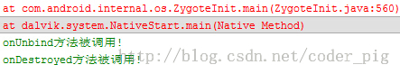

一、本节引言
好的，我们在前三节中对Android中的Activity进行了研究学习，相信大家获益良多吧！ 本节开始我们继续来学习Android中的第二个组件：Service(服务)， 好，废话不多说，开始本节内容！
二、线程的相关概念
在开始学习Service之前我们先来了解下线程的一些概念！
1）相关概念：
程序：为了完成特定任务，用某种语言编写的一组指令集合(一组静态代码)进程：运行中的程序，系统调度与资源分配的一个独立单位，操作系统会 为每个进程分配一段内存空间！程序的依次动态执行，经历代码的加载，执行， 执行完毕的完整过程！线程：比进程更小的执行单元，每个进程可能有多条线程，线程需要放在一个进程中才能执行，线程由程序负责管理，而进程则由系统进行调度！多线程的理解：并行执行多个条指令，将CPU时间片按照调度算法分配给各个 线程，实际上是分时执行的，只是这个切换的时间很短，用户感觉到"同时"而已！
2）线程的生命周期：

3）创建线程的三种方式：
- 继承Thread类
- 实现Runnable接口
- 实现Callable接口 如果：使用的是2创建的线程的话，可以直接这样启动：
new Thread(myThread).start();new Thread(new Runnable(){ public void run(); }).start();
三、Service与Thread线程的区别
其实他们两者并没有太大的关系，不过有很多朋友经常把这两个混淆了！ Thread是线程，程序执行的最小单元，分配CPU的基本单位！ 而Service则是Android提供一个允许长时间留驻后台的一个组件，最常见的 用法就是做轮询操作！或者想在后台做一些事情，比如后台下载更新！ 记得别把这两个概念混淆！
四、Service的生命周期图

五、生命周期解析
好的，从上图的生命周期，我们可以知道，Android中使用Service的方式有两种：
- 1）StartService()启动Service
- 2）BindService()启动Service
PS:还有一种，就是启动Service后，绑定Service！
1）相关方法详解：
- onCreate()：当Service第一次被创建后立即回调该方法，该方法在整个生命周期 中只会调用一次！
- onDestory()：当Service被关闭时会回调该方法，该方法只会回调一次！
- onStartCommand(intent,flag,startId)：早期版本是onStart(intent,startId), 当客户端调用startService(Intent)方法时会回调，可多次调用StartService方法， 但不会再创建新的Service对象，而是继续复用前面产生的Service对象，但会继续回调 onStartCommand()方法！
- IBinder onOnbind(intent)：该方法是Service都必须实现的方法，该方法会返回一个 IBinder对象，app通过该对象与Service组件进行通信！
- onUnbind(intent)：当该Service上绑定的所有客户端都断开时会回调该方法！
2）StartService启动Service
①首次启动会创建一个Service实例,依次调用onCreate()和onStartCommand()方法,此时Service 进入运行状态,如果再次调用StartService启动Service,将不会再创建新的Service对象, 系统会直接复用前面创建的Service对象,调用它的onStartCommand()方法！
②但这样的Service与它的调用者无必然的联系,就是说当调用者结束了自己的生命周期, 但是只要不调用stopService,那么Service还是会继续运行的!
③无论启动了多少次Service,只需调用一次StopService即可停掉Service
3）BindService启动Service
①当首次使用bindService绑定一个Service时,系统会实例化一个Service实例,并调用其onCreate()和onBind()方法,然后调用者就可以通过IBinder和Service进行交互了,此后如果再次使用bindService绑定Service,系统不会创建新的Sevice实例,也不会再调用onBind()方法,只会直接把IBinder对象传递给其他后来增加的客户端!
②如果我们解除与服务的绑定,只需调用unbindService(),此时onUnbind和onDestory方法将会被调用!这是一个客户端的情况,假如是多个客户端绑定同一个Service的话,情况如下 当一个客户完成和service之间的互动后，它调用 unbindService() 方法来解除绑定。当所有的客户端都和service解除绑定后，系统会销毁service。（除非service也被startService()方法开启）
③另外,和上面那张情况不同,bindService模式下的Service是与调用者相互关联的,可以理解为 "一条绳子上的蚂蚱",要死一起死,在bindService后,一旦调用者销毁,那么Service也立即终止!
通过BindService调用Service时调用的Context的bindService的解析 bindService(Intent Service,ServiceConnection conn,int flags)
service:通过该intent指定要启动的Service
conn:ServiceConnection对象,用户监听访问者与Service间的连接情况, 连接成功回调该对象中的onServiceConnected(ComponentName,IBinder)方法; 如果Service所在的宿主由于异常终止或者其他原因终止,导致Service与访问者间断开 连接时调用onServiceDisconnected(CompanentName)方法,主动通过unBindService() 方法断开并不会调用上述方法!
flags:指定绑定时是否自动创建Service(如果Service还未创建), 参数可以是0(不自动创建),BIND_AUTO_CREATE(自动创建)
4）StartService启动Service后bindService绑定
如果Service已经由某个客户端通过StartService()启动,接下来由其他客户端 再调用bindService(）绑定到该Service后调用unbindService()解除绑定最后在 调用bindService()绑定到Service的话,此时所触发的生命周期方法如下:
onCreate( )->onStartCommand( )->onBind( )->onUnbind( )->onRebind( )
PS:前提是:onUnbind()方法返回true!!! 这里或许部分读者有疑惑了,调用了unbindService后Service不是应该调用 onDistory()方法么!其实这是因为这个Service是由我们的StartService来启动的 ,所以你调用onUnbind()方法取消绑定,Service也是不会终止的!
得出的结论: 假如我们使用bindService来绑定一个启动的Service,注意是已经启动的Service!!! 系统只是将Service的内部IBinder对象传递给Activity,并不会将Service的生命周期 与Activity绑定,因此调用unBindService( )方法取消绑定时,Service也不会被销毁！
六、生命周期验证
接下来我们写代码来验证下生命周期：
1）验证StartService启动Service的调用顺序
首先我们自定义一个Service,重写相关的方法,用户在logcat上打印验证:
TestService1.java
public class TestService1 extends Service {
private final String TAG = "TestService1";
//必须要实现的方法
@Override
public IBinder onBind(Intent intent) {
Log.i(TAG, "onBind方法被调用!");
return null;
}
//Service被创建时调用
@Override
public void onCreate() {
Log.i(TAG, "onCreate方法被调用!");
super.onCreate();
}
//Service被启动时调用
@Override
public int onStartCommand(Intent intent, int flags, int startId) {
Log.i(TAG, "onStartCommand方法被调用!");
return super.onStartCommand(intent, flags, startId);
}
//Service被关闭之前回调
@Override
public void onDestroy() {
Log.i(TAG, "onDestory方法被调用!");
super.onDestroy();
}
}
AndroidManifest.xml完成Service注册
<!-- 配置Service组件,同时配置一个action -->
<service android:name=".TestService1">
<intent-filter>
<action android:name="com.jay.example.service.TEST_SERVICE1"/>
</intent-filter>
</service>
再接着是简单的布局文件,两个按钮,再最后是MainActivity的编写,在按钮的点击事件中分别 调用startService( )和stopService( )!
public class MainActivity extends Activity {
private Button start;
private Button stop;
@Override
protected void onCreate(Bundle savedInstanceState) {
super.onCreate(savedInstanceState);
setContentView(R.layout.activity_main);
start = (Button) findViewById(R.id.btnstart);
stop = (Button) findViewById(R.id.btnstop);
//创建启动Service的Intent,以及Intent属性
final Intent intent = new Intent();
intent.setAction("com.jay.example.service.TEST_SERVICE1");
//为两个按钮设置点击事件,分别是启动与停止service
start.setOnClickListener(new OnClickListener() {
@Override
public void onClick(View v) {
startService(intent);
}
});
stop.setOnClickListener(new OnClickListener() {
@Override
public void onClick(View v) {
stopService(intent);
}
});
}
}
运行截图：

点击开始服务:

吃饱饭没事做,点多几下:
最后点击停止服务:

结果分析：
从上面的运行结果我们可以验证我们生命周期图中解释的内容: 我们发现onBind()方法并没有被调用,另外多次点击启动Service,只会重复地调用onStartCommand 方法!无论我们启动多少次Service,一个stopService就会停止Service!
2）验证BindService启动Service的顺序:
在开始讲写代码之前,我们先要来了解一些东西先: 首先是第一个大图下面给出的Context的bindService方法：
- ServiceConnection对象:监听访问者与Service间的连接情况,如果成功连接,回调 onServiceConnected(),如果异常终止或者其他原因终止导致Service与访问者断开 连接则回调onServiceDisconnected方法,调用unBindService()不会调用该方法!
- onServiceConnected方法中有一个IBinder对象,该对象即可实现与被绑定Service 之间的通信!我们再开发Service类时,默认需要实现IBinder onBind()方法,该方法返回的 IBinder对象会传到ServiceConnection对象中的onServiceConnected的参数,我们就可以 在这里通过这个IBinder与Service进行通信! 总结：
Step 1:在自定义的Service中继承Binder,实现自己的IBinder对象Step 2:通过onBind( )方法返回自己的IBinder对象Step 3:在绑定该Service的类中定义一个ServiceConnection对象,重写两个方法, onServiceConnected和onDisconnected！然后直接读取IBinder传递过来的参数即可!
那么好了,接下来就是写代码验证了,这里的话我们定义一个用来计时的Service, 然后来演示BindService的用法以及方法调用流程!代码比较简单,不解释了!
TestService2.java:
public class TestService2 extends Service {
private final String TAG = "TestService2";
private int count;
private boolean quit;
//定义onBinder方法所返回的对象
private MyBinder binder = new MyBinder();
public class MyBinder extends Binder
{
public int getCount()
{
return count;
}
}
//必须实现的方法,绑定改Service时回调该方法
@Override
public IBinder onBind(Intent intent) {
Log.i(TAG, "onBind方法被调用!");
return binder;
}
//Service被创建时回调
@Override
public void onCreate() {
super.onCreate();
Log.i(TAG, "onCreate方法被调用!");
//创建一个线程动态地修改count的值
new Thread()
{
public void run()
{
while(!quit)
{
try
{
Thread.sleep(1000);
}catch(InterruptedException e){e.printStackTrace();}
count++;
}
};
}.start();
}
//Service断开连接时回调
@Override
public boolean onUnbind(Intent intent) {
Log.i(TAG, "onUnbind方法被调用!");
return true;
}
//Service被关闭前回调
@Override
public void onDestroy() {
super.onDestroy();
this.quit = true;
Log.i(TAG, "onDestroyed方法被调用!");
}
@Override
public void onRebind(Intent intent) {
Log.i(TAG, "onRebind方法被调用!");
super.onRebind(intent);
}
}
在AndroidManifest.xml中对Service组件进行注册:
<service android:name=".TestService2" android:exported="false">
<intent-filter>
<action android:name="com.jay.example.service.TEST_SERVICE2"/>
</intent-filter>
</service>
MainActivity.java:
public class MainActivity extends Activity {
private Button btnbind;
private Button btncancel;
private Button btnstatus;
//保持所启动的Service的IBinder对象,同时定义一个ServiceConnection对象
TestService2.MyBinder binder;
private ServiceConnection conn = new ServiceConnection() {
//Activity与Service断开连接时回调该方法
@Override
public void onServiceDisconnected(ComponentName name) {
System.out.println("------Service DisConnected-------");
}
//Activity与Service连接成功时回调该方法
@Override
public void onServiceConnected(ComponentName name, IBinder service) {
System.out.println("------Service Connected-------");
binder = (TestService2.MyBinder) service;
}
};
@Override
protected void onCreate(Bundle savedInstanceState) {
super.onCreate(savedInstanceState);
setContentView(R.layout.activity_main);
btnbind = (Button) findViewById(R.id.btnbind);
btncancel = (Button) findViewById(R.id.btncancel);
btnstatus = (Button) findViewById(R.id.btnstatus);
final Intent intent = new Intent();
intent.setAction("com.jay.example.service.TEST_SERVICE2");
btnbind.setOnClickListener(new OnClickListener() {
@Override
public void onClick(View v) {
//绑定service
bindService(intent, conn, Service.BIND_AUTO_CREATE);
}
});
btncancel.setOnClickListener(new OnClickListener() {
@Override
public void onClick(View v) {
//解除service绑定
unbindService(conn);
}
});
btnstatus.setOnClickListener(new OnClickListener() {
@Override
public void onClick(View v) {
Toast.makeText(getApplicationContext(), "Service的count的值为:"
+ binder.getCount(), Toast.LENGTH_SHORT).show();
}
});
}
}
运行截图：

点击锁定Service:

继续点击锁定:没任何变化

获取当前Service的状态:
解除绑定:

如果我们再绑定后直接关掉Activity的话会报错, 然后会自动调用onUnbind和onDestory方法！
 
从上面的运行结果验证了生命周期图中的:
使用BindService绑定Service,依次调用onCreate(),onBind()方法, 我们可以在onBind()方法中返回自定义的IBinder对象;再接着调用的是 ServiceConnection的onServiceConnected()方法该方法中可以获得 IBinder对象,从而进行相关操作;当Service解除绑定后会自动调用 onUnbind和onDestroyed方法,当然绑定多客户端情况需要解除所有 的绑定才会调用onDestoryed方法进行销毁哦！